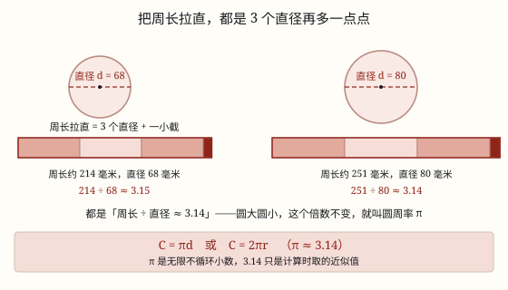

圆的周长与圆周率
圆的周长总是直径的 π 倍：C = π d = 2π r；π 是周长与直径的固定比值，3.14 是近似值。
| 所属主题 | 图形的认识与测量 |
|---|---|
| 所属模块 | 图形与几何 |
| 课标学段 | 第三学段（5~6年级） |
| 前置知识 | 长方形和正方形的面积、平行四边形的面积 |
| 核心素养 | 量感几何直观推理意识 |
课标要求
| 图形与几何·图形的认识与测量 | 认识圆和扇形，会用圆规画圆；认识圆周率（例22）；探索圆的周长和面积计算公式，能解决简单的实际问题。 印刷第 32 页 行为动词：探索 |
|---|---|
| 图形与几何·图形的认识与测量 | 在图形认识与测量的过程中，进一步形成量感、空间观念和几何直观。 印刷第 33 页 行为动词：感悟 |
说明
围成圆的一圈曲线，长度叫圆的周长。圆没有直边，尺子没法直接量，但可以想办法「化曲为直」：用一根绳子绕圆一圈，做好记号再把绳子拉直量；或者让圆在尺子上滚一圈，滚过的距离就是周长。
量过几个大小不同的圆以后，会发现一件很有意思的事：不管圆多大多小，周长总是直径的 3 倍多一点。这个固定的倍数，就叫圆周率，用希腊字母 π 表示。
π 是一个无限不循环小数：3.1415926535\cdots，写不完、也不循环。计算时通常取它的近似值 3.14。注意是「约等于」，π 比 3.14 还要大一点点。
既然周长总是直径的 π 倍，就有 C = π d。直径是半径的 2 倍，即 d = 2r，代进去又得到 C = 2π r。两个公式是一回事，题目给直径用前一个，给半径用后一个。
为什么所有圆都服从同一个倍数？因为大圆就是小圆按同一个比例放大出来的，形状完全一样。放大时，直径变成原来的几倍，周长也跟着变成几倍，两个一起变，比值就不变——就像同一张照片放大，长和宽的比不会变。
使用场景
圆形花坛围栏：给直径 6 米的花坛围一圈栅栏，买多少米栅栏，算的就是周长。
车轮滚多远：自行车轮半径 35 厘米，蹬一圈车前进多远，就是车轮滚过一圈的周长。
给圆桌、井盖包边：圆桌边缘包一圈金属条、井盖外圈加一道箍，都要先算周长。
测树干的粗细：一根绳子绕树干一圈量出周长，再除以 π，就能算出树干的直径。
注意点
3.14 是近似值，不是精确值。π 是无限不循环小数，3.14 只是计算时取的近似数，所以结果常写「约」。
给半径别忘乘 2。半径 3 厘米的圆，周长是 2 × 3.14 × 3 = 18.84 厘米，不是 3.14 × 3。
周长是长度，单位不带平方。算出来是厘米、米，不是平方厘米、平方米。
半圆的周长不是圆周长的一半。半圆外面那条曲线是 π r，还要再加上一条直径 2r，一共 π r + 2r。
题目说「取 π = 3.14」就用 3.14；没说的话，按题目要求取，别自己随意改成 3。
为什么是这样

图 1：把周长拉直，都正好是 3 个直径再多一点点——圆大圆小，这个倍数不变
算理推导
拿一枚硬币，用绳子紧贴边缘绕一圈，在绳子上做记号，再把绳子拉直量长度；接着量出硬币的直径。用周长除以直径，算出来大约是 3.1。
换一个大一点的圆——杯口、胶带卷、脸盆，同样量周长和直径再相除。你会发现，不管换多大的圆，这个比值都在 3.1 左右。
古人试了许许多多的圆，得到的都是同一个数，于是把它定下来，叫作圆周率 π。它不是量出来的巧合，而是所有圆共有的一个固定倍数（看图 1：两个圆拉直的周长，都是 3 个直径再加一小截）。
为什么圆大圆小都是这个数？因为大圆就是小圆按比例放大。直径放大到原来的 2 倍，周长也放大到 2 倍，比值 C ÷ d 里分子分母同时乘 2，商不变——这正是商不变的规律。
既然 C ÷ d = π，反过来就有 C = π d；再把 d = 2r 代进去，得 C = 2π r。两个公式，一条来源。
动手实验
找三样圆形物体：硬币、杯口、胶带卷。用绳子分别绕一圈量出周长，再用尺量出直径，列一张表算「周长 ÷ 直径」。三个比值应该都在 3.1 附近。再用 π = 3.14 算一遍每个圆的周长，和绳子量出来的结果比一比，看看差多少。
按场景的例题
例 1（场景：绿化照明） 小区圆形花坛围栅栏
一个圆形花坛的直径是 6 米，沿着边缘围一圈栅栏，需要多少米栅栏？
解：C = π d = 3.14 × 6 = 18.84（米）。
答：需要 18.84 米栅栏。
例 2（场景：行程出行） 自行车轮滚一圈
一辆自行车车轮的半径是 35 厘米。车轮转一圈，车前进多少米？
解：先统一单位：35 厘米 = 0.35 米。C = 2π r = 2 × 3.14 × 0.35 = 2.198（米）。
答：车轮转一圈前进 2.198 米。
例 3（场景：工程建造） 给圆桌包一圈金属边
一张圆桌的直径是 1.2 米，沿桌边包一圈金属装饰条（接头忽略不计），需要多少米？
解：C = 3.14 × 1.2 = 3.768（米）。
答：需要 3.768 米金属条。
例 4（场景：计量与估算） 用绳子量树干粗细
用绳子绕一棵树的树干一圈，量得绳长 94.2 厘米。这棵树树干处的直径大约是多少厘米？
解：由 C = π d 反推：d = C ÷ π = 94.2 ÷ 3.14 = 30（厘米）。
答：树干直径大约是 30 厘米。
常用推论
C = π d = 2π r；反过来 d = C ÷ π，r = C ÷ 2π，d = 2r。
半圆的周长 = 弧长 + 直径 = π r + 2r；半圆的面积 S = π r^2 ÷ 2。周长是线、面积是面，别混。
直径（或半径）扩大到原来的 n 倍，周长也扩大到 n 倍；但周长与直径的比值始终是 π，不变。
两个圆直径的比是 2:3，它们周长的比也是 2:3——周长和直径成正比。
易错点
错半径 3 厘米，周长算成 3.14 × 3 = 9.42 厘米。
为什么错把半径当成了直径，π d 里的 d 是直径。
正确C = 2 × 3.14 × 3 = 18.84 厘米。
错说「π 就等于 3.14」。
为什么错π 是无限不循环小数，3.14 只是取到百分位的近似值。
正确π \approx 3.14，π 比 3.14 略大。
错半圆的周长算成 3.14 × r。
为什么错只算了外面那条弧，忘了半圆还有一条直径封口。
正确半圆周长 = π r + 2r。
错算出 18.84，答案写成「18.84 平方厘米」。
为什么错周长是围一圈的长度，单位是长度单位，不是面积单位。
正确写成 18.84 厘米。
直观理解
圆周率像所有圆共有的一个「暗号」：不管是一枚硬币，还是地球的赤道，围一圈的长度总是直径的 3 倍多一点。这就像所有正方形都满足「周长 ÷ 边长 = 4」一样，圆也有自己固定的那个数，只不过它不是一个整齐的数。
圆的周长πd，直径三倍多一点；半径两倍是直径，2πr 别记偏。